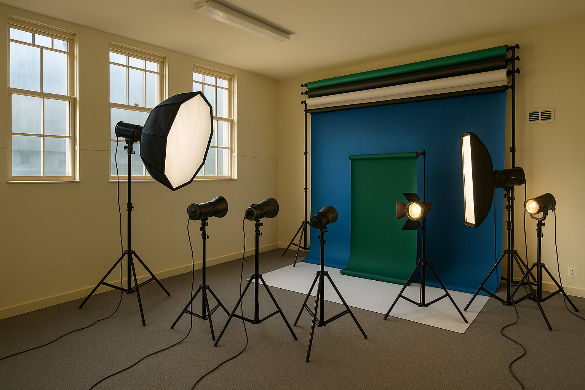
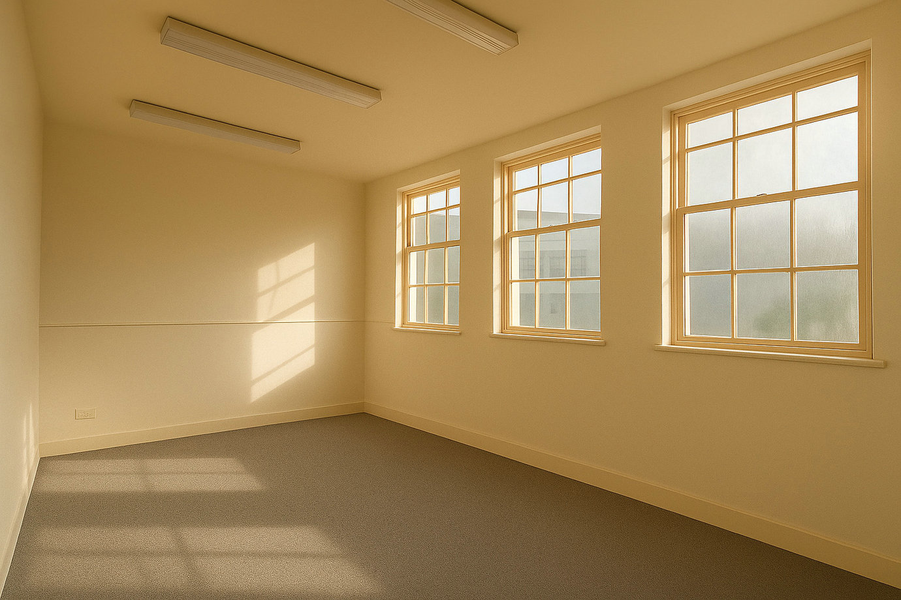
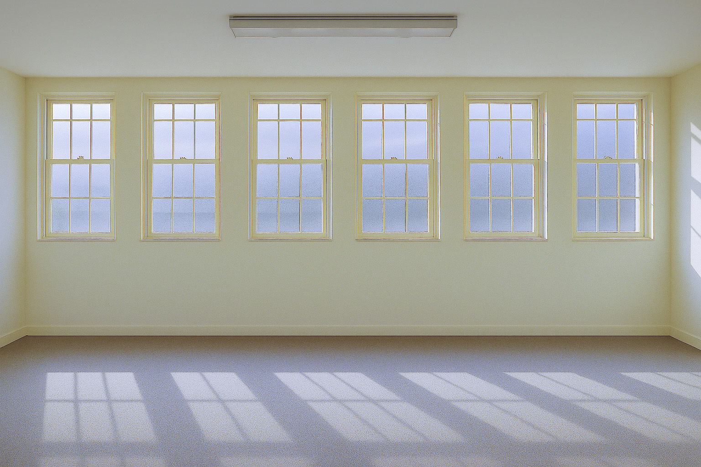

Architectural character with production flexibility
Oversized heritage windows, high ceilings and an open layout give the studio excellent depth and scale. It can support intimate portrait sessions as comfortably as full-body, group and fashion photography.
An electric backdrop system and essential lighting equipment help independent photographers and small production teams move efficiently from setup to final frame.
Built to support the shoot
- Abundant natural daylight
- Double-height ceilings and generous floor depth
- Electric backdrop system with colour options
- Softboxes, LED panels, reflectors and light stands
- Suitable for portraits, lookbooks, products and editorial work
Flexible working arrangements



Discuss your production
Tell the team about your date, crew, equipment and backdrop requirements.
If your email app does not open, use Gmail or email bm.cityaparts@gmail.com. Review your message before sending.